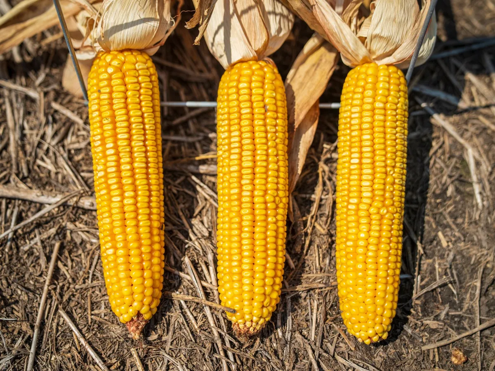
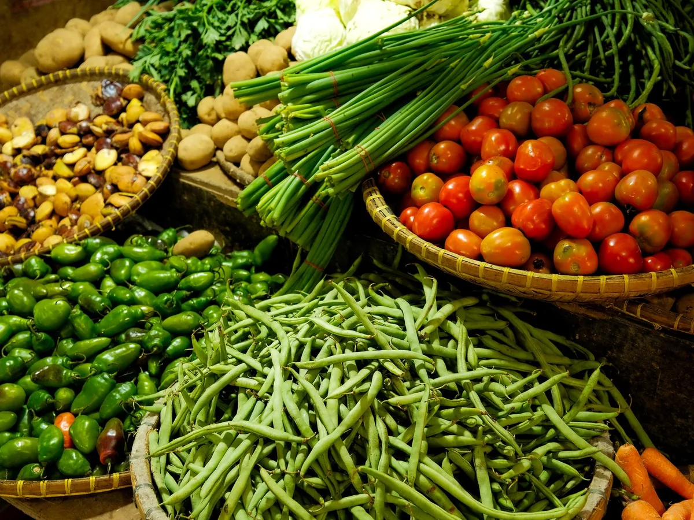
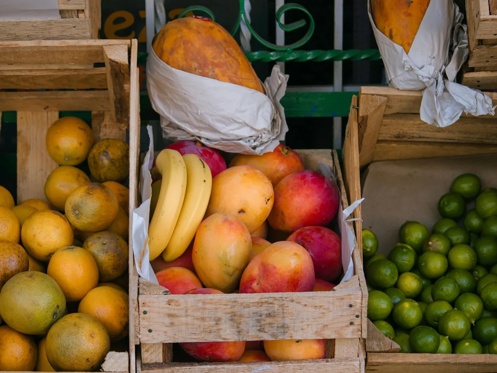
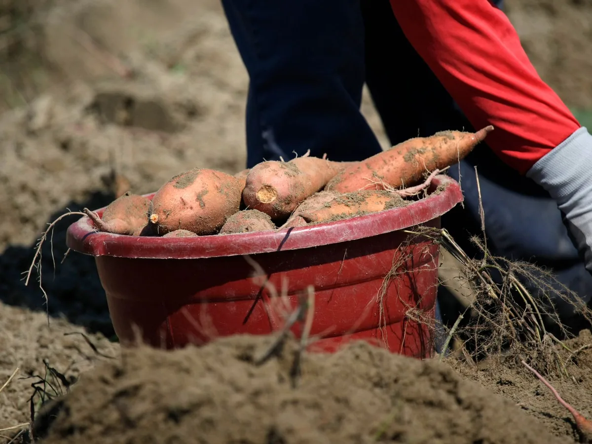

Pangan
Padi
Padi diolah menjadi beras dan menjadi sumber karbohidrat utama bagi banyak masyarakat Indonesia.
Tanaman unggulan
Setiap kelompok tanaman memiliki fungsi dalam pangan, ekonomi, maupun kebutuhan sehari-hari.
Padi diolah menjadi beras dan menjadi sumber karbohidrat utama bagi banyak masyarakat Indonesia.

Jagung dimanfaatkan sebagai bahan pangan, pakan ternak, dan bahan baku industri.

Sayuran seperti bayam, sawi, dan selada menjadi sumber vitamin, mineral, dan serat.

Buah tropis seperti mangga, pisang, dan jeruk memiliki nilai konsumsi dan ekonomi.

Kopi, teh, kakao, dan kelapa merupakan komoditas perkebunan penting.

Singkong, ubi jalar, dan talas dapat menjadi sumber pangan alternatif.
Kelompok tanaman
Setiap kelompok tanaman memiliki peran dan kebutuhan pengelolaan yang berbeda.
Kelompok tanaman yang menjadi sumber karbohidrat dan protein utama, seperti padi, jagung, serta umbi-umbian.
Tanaman buah, sayur, tanaman hias, dan tanaman obat yang umumnya bernilai ekonomi tinggi dan cepat panen.
Komoditas tahunan seperti kopi, teh, kakao, dan kelapa yang dibudidayakan untuk pasar dalam dan luar negeri.
Kelompok biofarmaka seperti jahe, kunyit, temulawak, kencur, dan serai yang dimanfaatkan sebagai bahan jamu, bumbu, maupun minuman herbal.
Lanjut ke praktik
Halaman budidaya menjelaskan tahapan dari persiapan lahan hingga panen, dilengkapi pilihan teknologi yang relevan.